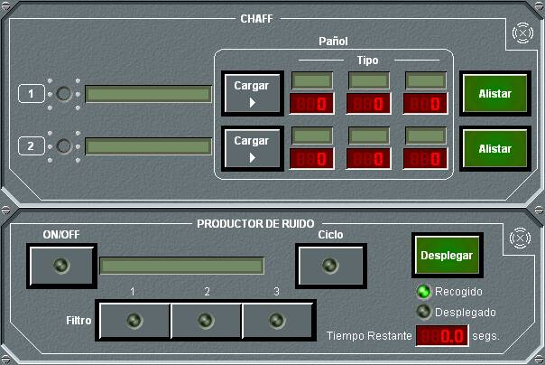

Productor de Ruido

En este panel de detalle del Productor de Ruido, que se muestra agrupado con el del lanzador de Chaff, se muestra el nombre del productor, y su estado, y permite realizar las siguientes acciones:
- Encender / Apagar el equipo, pulsando el botón ON / OFF. El equipo no puede encenderse hasta que no está completamente desplegado.
- Desplegar / Recoger el equipo. Si el equipo está recogido, el operador puede pulsar Desplegar, con lo que comienza a desplegarse. Mientras dure el despliegue, se muestra el led Desplegado en amarillo, se indica el tiempo restante para completar el despliegue, y el operador puede pulsar Cancelar, con lo que se interrumpe el despliegue y se inicia su recogida. Si el equipo está desplegado, el operador puede pulsar Recoger, con lo que comienza a recogerse. Mientras dure la recogida, se muestra el led Recogido en amarillo, se indica el tiempo restante para completar la recogida, y el operador puede pulsar Cancelar, con lo que se interrumpe la recogida y se inicia su despliegue. Al pulsar Cancelar, tanto si está desplegando como recogiendo, se suspende la acción en curso y se inicia la contraria, teniendo en cuenta el tiempo que llevaba invertido en la acción que se cancela, es decir, el tiempo requerido para completar la acción iniciada será el que llevaba ya invertido en la acción cancelada.
- Aplicar Filtros. Pulsando los botones correspondientes a los filtros se aplicarán o no los mismos. Estos filtros atenúan el ruido a tres frecuencias propias del equipo, y solo están disponibles en equipos que tengan esta capacidad.
- Activar el Cycle-Timer. Pulsando el botón Ciclo se activa la opción Cycle-Timer, que enciende y apaga el equipo a intervalos preprogramados en el mismo. Esta opción solo está disponible en equipos que tengan esta capacidad.